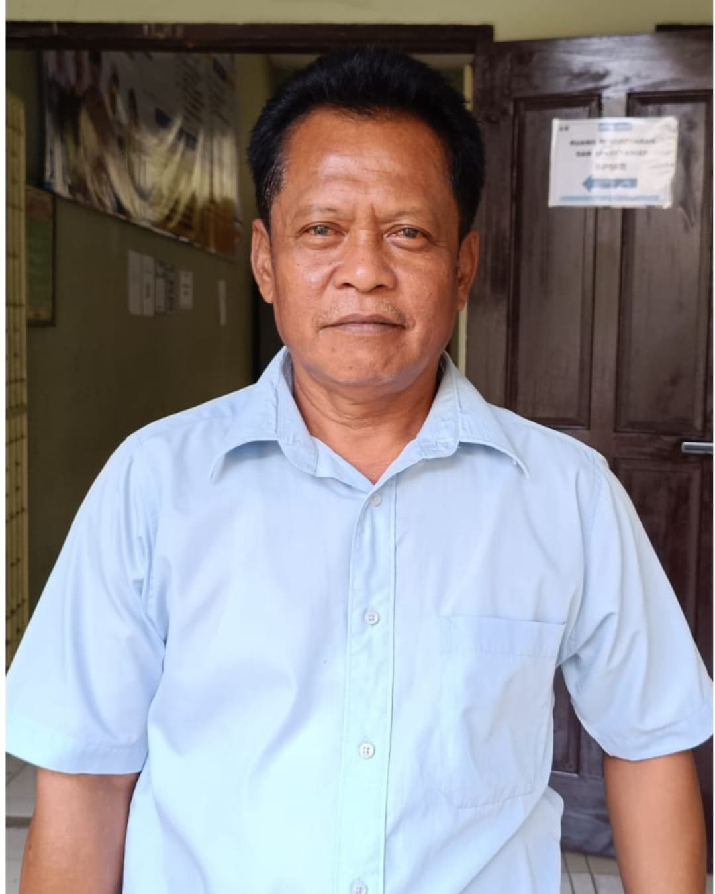
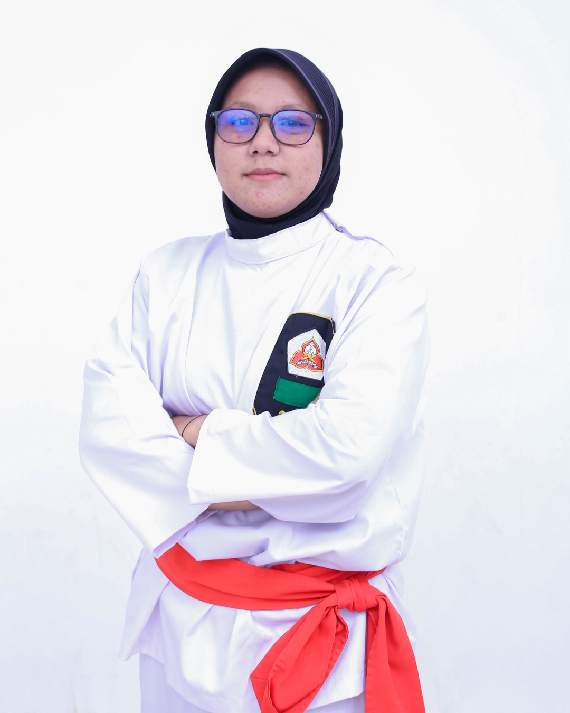
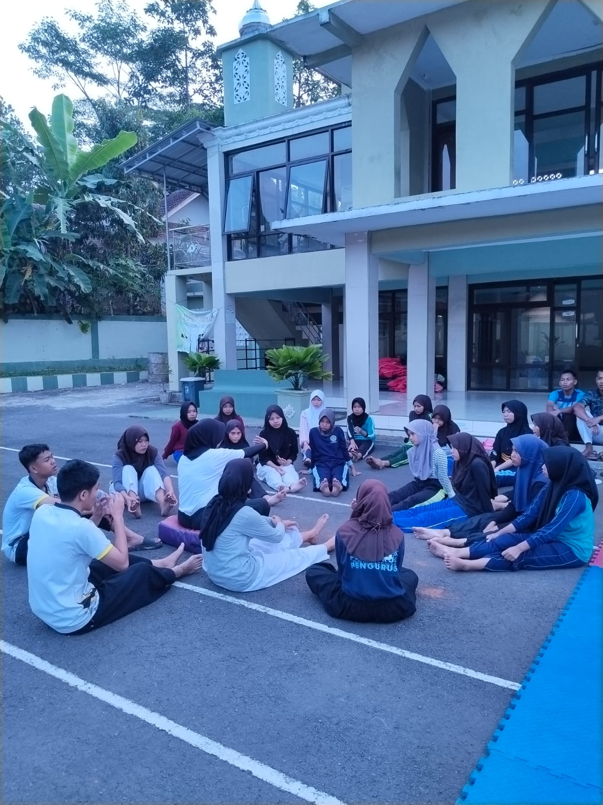
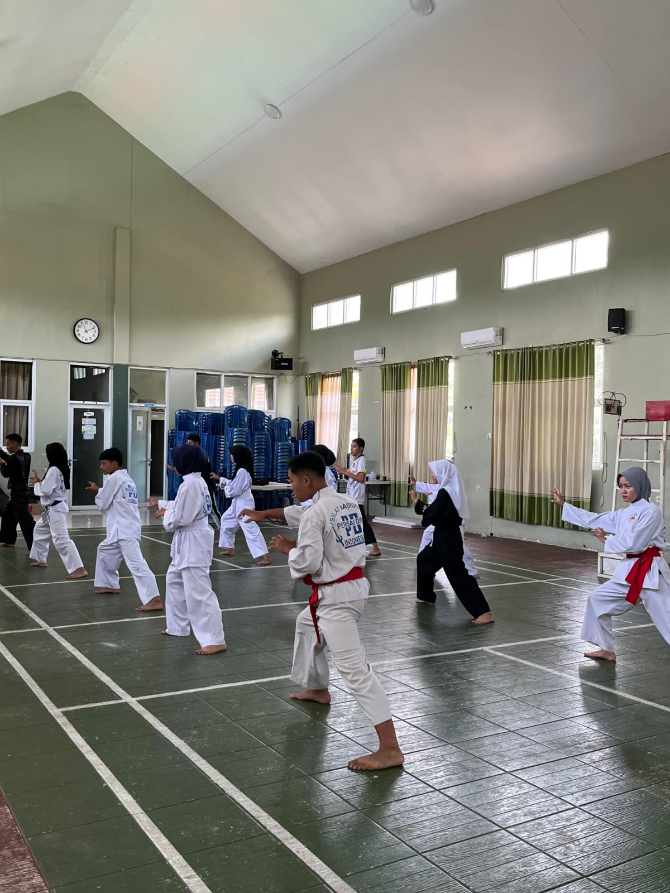

<!doctype html>
<html lang="en">
  <head>
    <meta charset="utf-8">
    <meta name="viewport" content="width=device-width, initial-scale=1">
    <title>Perisai Diri Manonjaya</title>
    <!-- cssbs -->
    <link href="https://cdn.jsdelivr.net/npm/bootstrap@5.3.8/dist/css/bootstrap.min.css" rel="stylesheet" integrity="sha384-sRIl4kxILFvY47J16cr9ZwB07vP4J8+LH7qKQnuqkuIAvNWLzeN8tE5YBujZqJLB" crossorigin="anonymous">

    <!-- logo web -->
     <link rel="Icon" type="images/logo.png" href="images/logo.png">

    
    <!-- cssme -->
     <link rel="stylesheet" href="style.css">

     <!-- animasi -->
     <link rel="stylesheet" href="https://unpkg.com/aos@2.3.1/dist/aos.css">

     <!-- iconbtstrap -->
      <link rel="stylesheet"
href="https://cdn.jsdelivr.net/npm/bootstrap-icons@1.11.3/font/bootstrap-icons.min.css">
  </head>
  <body>
    <script src="https://unpkg.com/aos@2.3.1/dist/aos.js"></script>

<script>
    AOS.init();
</script>
  </body>
</html>
<!--navbar-->
<nav class="navbar navbar-expand-lg bg-danger fixed-top">
  <div class="container">
    <a class="navbar-brand" href="#">
      
    </a>
    <div class="text">
      <h6 class="fw-bold mx-auto">Perisai Diri Manonjaya</h6>
      <small class="text-center">Pandai Silat Tanpa Cedra</small>
    </div>
    <button class="navbar-toggler" type="button" data-bs-toggle="collapse" data-bs-target="#navbarNavDropdown" aria-controls="navbarNavDropdown" aria-expanded="false" aria-label="Toggle navigation">
      <span class="navbar-toggler-icon"></span>
    </button>
    <div class="collapse navbar-collapse" id="navbarNavDropdown">
      <ul class="navbar-nav ms-auto">
        <li class="nav-item">
          <a class="nav-link active" aria-current="page" href="index.html">Beranda</a>
        </li>
       <li class="nav-item">
          <a class="nav-link active"  aria-current="page"href="#tentang">Tentang</a>
        </li>
        <li class="nav-item">
          <a class="nav-link active"  aria-current="page"href="#galeri">Galeri</a>
       <li class="nav-item">
          <a class="nav-link active" aria-current="page" href="#jadwal">jadwal</a>
       <li class="nav-item">
          <a class="nav-link active" aria-current="page" href="pendaftaran.html">Pendaftaran</a>
        </li>
        </li>
    </div>
  </div>
</nav>
<!--navbar end-->

<!-- beranda -->

<!-- sejarah singkat -->
<section id="Sejarah" class="container-fluid mt-5 px-5" >
    <div class="row text-center">
        <div class="col">
            <h2>Sejarah Singkat</h2>
            <hr>
        </div>
    </div>

    <div class="container text-center">
        <div class="row">
            <div class="col">
            
        </div>
            </div>
        <div class="col" style="padding-top: 2rem;">
            <p>Keluarga Silat Nasional Indonesia Perisai Diri atau disingkat Kelatnas Indonesia Perisai Diri[1] adalah organisasi olahraga beladiri yang didirikan oleh R.M. Soebandiman Dirdjoatmodjo bersama Mas Basofi Soedirman pada tanggal 2 Juli 1955 di Surabaya, Jawa Timur.</p>
            <p>R.M. Soebandiman Dirdjoatmodjo lahir di Yogyakarta pada tanggal 8 Januari 1913 di lingkungan pura Pakualaman. Dia adalah putra pertama dari R.M. Pakoe Soedirdjo, buyut dari Sri Paduka Paku Alam II. Sejak berusia 9 tahun dia telah dapat menguasai ilmu pencak silat yang ada di lingkungan keraton sehingga mendapat kepercayaan untuk melatih teman-temannya di lingkungan Pakualaman. Di samping pencak silat dia juga belajar menari di istana Pakualaman sehingga berteman dengan Wasi dan Bagong Kussudiardja.</p>
    </div>
    </div>
</section>
<!-- sejarah singkat end -->

<!-- Tentang Kami -->
<section id="tentang" class="container-fluid mt-5 px-5" style="padding-top: 5rem;">
    <div class="row text-center">
        <div class="col">
            <h2>Tentang Kami</h2>
            <hr>
        </div>
    </div>

    <div class="row mt-3">
        <div class="col-md-6" data-aos="fade-right" data-aos-duration="5000">
            
        </div>

        <div class="col-md-6" data-aos="fade-left" data-aos-duration="50000">
            <h4>Perisai Diri Manonjaya</h4>

            <p>
                Perisai Diri Manonjaya merupakan salah satu cabang
                perguruan silat Perisai Diri yang berfokus pada
                pembinaan karakter, kedisiplinan, dan kemampuan bela diri.
            </p>

            <p>
                Dengan moto <b>"Pandai Silat Tanpa Cedera"</b>,
                kami berkomitmen untuk mengembangkan kemampuan fisik,
                mental, dan sportivitas para anggota.
            </p>
        </div>
    </div>
</section>
</section>

<!-- Petinggi -->
<section id="petinggi" class="container mt-5">

    <div class="row justify-content-center text-center">

         <!-- ketua cabang -->
        <div class="col-md-4 mb-4" data-aos="fade-right" data-aos-duration="1000">

            <div class="card shadow border-0 p-4">

                

                <h2 class="fw-semibold fs-4 mt-3">
                    Ahmad Sofyan Haris,S.Pd.,S.Kom
                </h2>

                <p class="text-secondary">
                    Ketua Perisai Diri Cabang Tasikmalaya
                </p>

            </div>

        </div>

        <!-- Pembina -->
        <div class="col-md-4 mb-4" data-aos="fade-up" data-aos-duration="1000">

            <div class="card shadow border-0 p-4">

                

                <h2 class="fw-semibold fs-4 mt-3">
                    Uus Sugihartono S.Pd, M.Pd
                </h2>

                <p class="text-secondary">
                    Pembina SMK Manonjaya
                </p>

            </div>

        </div>

       
        <!-- Pelatih -->
        <div class="col-md-4 mb-4" data-aos="fade-left" data-aos-duration="1000">

            <div class="card shadow border-0 p-4">

                

                <h2 class="fw-semibold fs-4 mt-3">
                    Risma Triawati S. Pd, Gr
                </h2>

                <p class="text-secondary">
                    Pelatih Cabang Manonjaya
                </p>

            </div>

        </div>

    </div>

</section>
<!-- petinggi end -->
<!--Tentang end-->
<!-- beranda end -->

<!-- Galeri -->
<section id="galeri" class="container mt-5" style="padding-top: 5rem;">
    <div class="row text-center mb-4" data-aos="flip-left">
        <div class="col">
            <h2>Galeri</h2>
            <p>Dokumentasi latihan dan kejuaraan Perisai Diri Manonjaya</p>
        </div>
    </div>

    <div class="row">

        <div class="col-md-4 mb-4">
            <div class="card shadow" data-aos="zoom-in" data-aos-duration="1500">
                
                <div class="card-body text-center">
                    <h5>Latihan Rutin</h5>
                    <p>Kegiatan latihan bersama anggota.</p>
                </div>
            </div>
        </div>

        <div class="col-md-4 mb-4">
            <div class="card shadow" data-aos="zoom-in" data-aos-duration="1500">
                
                <div class="card-body text-center">
                    <h5>Latihan Teknik</h5>
                    <p>Pembelajaran teknik bela diri.</p>
                </div>
            </div>
        </div>
 
        <div class="col-md-4">
            <div class="card shadow" data-aos="zoom-in" data-aos-duration="1500">
                
                <div class="card-body text-center">
                    <h5>Kejuaraan</h5>
                    <p>Prestasi dan pertandingan.</p>
                </div>
            </div>
        </div>
            <div class="text-center" style="margin-top: 5rem;">
                 <a href="galeri.html#Kejuaran">
                    <button type="button" class="btn btn-light btn-animasi fw-bold">Lihat Semua</button>
                </a>
            </div>
    </div>
</section>
<!-- galeri end -->

<!-- open recruitment -->
<div class="container text-center" data-aos="zoom-in" data-aos-duration="2000">
        <div class="row">
            <div class="col">
            
        </div>
        </div>

        <!-- btn daftar -->
 
 <!-- btn daftar end -->
<div class="daftar-wrapper">
    <span class="petunjuk kiri">👉</span>

    <a href="pendaftaran.html" class="btn-daftar">Daftar Sekarang</a>

    <span class="petunjuk kanan">👈</span>
</div>


<!-- Jadwal Latihan -->
<section id="jadwal" style="padding-top: 5rem;">
    <div class="row text-center mb-4">
        <div class="col" data-aos="zoom-in">
            <h2>Jadwal Latihan</h2>
            <p>Jadwal latihan Perisai Diri Manonjaya</p>
        </div>
    </div>

    <div class="row justify-content-center">
        <div class="col-md-8">

            <table class="table table-bordered table-striped text-center">
                <thead class="table-danger" data-aos="fade-right">
                    <tr>
                        <th>Hari</th>
                        <th>Waktu</th>
                        <th>Tempat</th>
                    </tr>
                </thead>

                <tbody data-aos="fade-left">
                    
                    <tr>
                        <td>Kamis</td>
                        <td>15.00 - selesai</td>
                        <td>RO SMKN MANONJAYA</td>
                    </tr>

                    <tr>
                        <td>Sabtu</td>
                        <td>14.00 - selesai</td>
                        <td>RO SMKN MANONJAYA</td>
                    </tr>
                </tbody>

            </table>

        </div>
    </div>
</section>

<!-- jadwal end -->


<!-- Footer -->
<footer class="bg-dark text-white text-center py-4">
    <div class="container">
        <h5>Perisai Diri Manonjaya</h5>
        <p>Pandai Silat Tanpa Cedera</p>

        <p>
            📍 Manonjaya, Tasikmalaya <br>
            📞 0859-2583-9345 <br>
            ✉️ perisaidirimanonjaya@gmail.com
        </p>

        <hr>

        <p class="mb-0">
            © 2026 Perisai Diri Manonjaya. All Rights Reserved.
        </p>
    </div>
</footer>
<!-- end footer -->
 
<script src="https://cdn.jsdelivr.net/npm/bootstrap@5.3.8/dist/js/bootstrap.bundle.min.js" integrity="sha384-FKyoEForCGlyvwx9Hj09JcYn3nv7wiPVlz7YYwJrWVcXK/BmnVDxM+D2scQbITxI" crossorigin="anonymous"></script>

<script src="script.js"></script>
</body>
</html>
</html>
